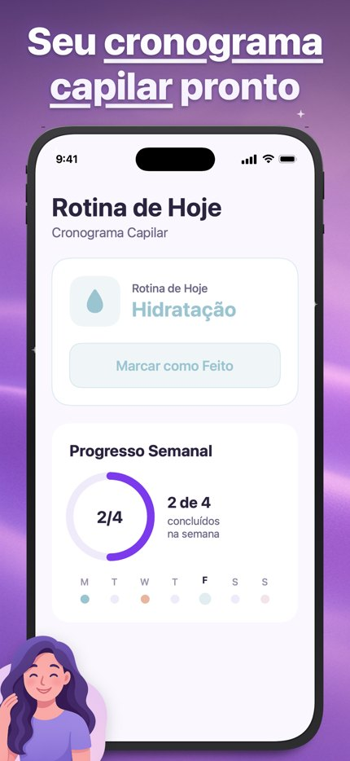
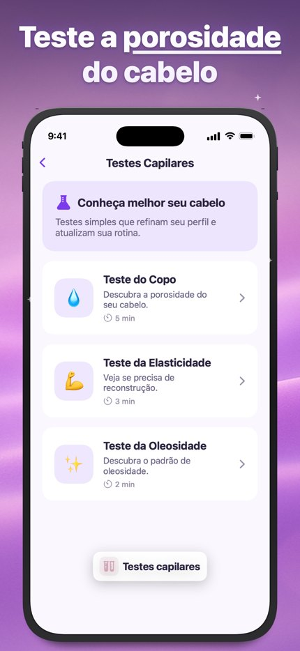
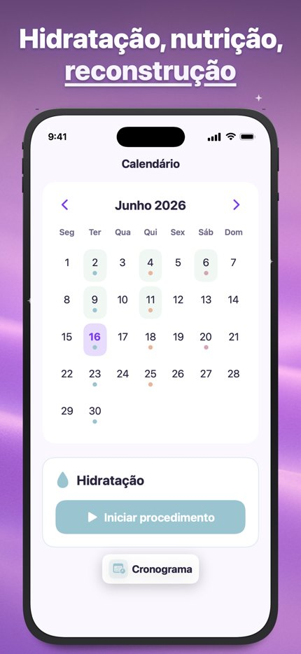
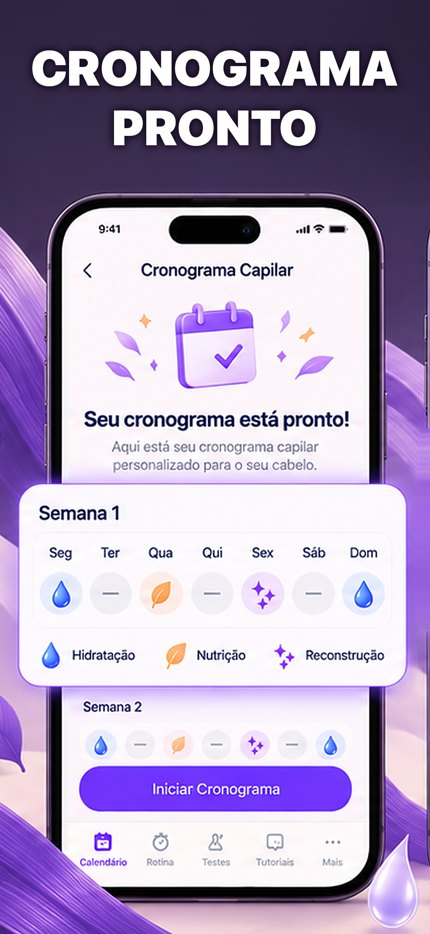
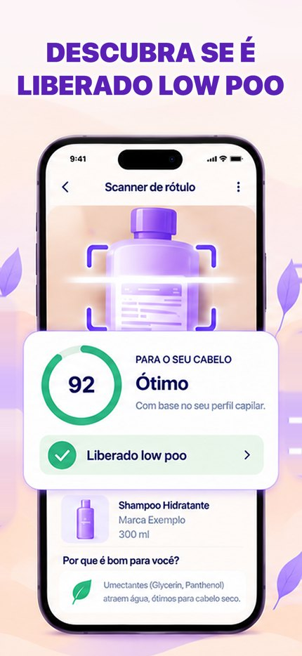

Cronograma Capilar — teste A/B de prints
Prévia em pt-BR (62% das instalações). Os 3 tratamentos contra os prints que estão na loja hoje. Enviado para a App Store Connect em 18/10 como experimento "Hair Prints A-B-C 2026-10-18" (75% do tráfego no teste), aguardando análise da Apple.
Controle — o que está na loja hoje
Tour de funções em fundo roxo claro, com mascote.



A — estilo de vida, claro
Mecha e produtos realistas, calendário no print 1. Títulos curtos, 2 linhas. Pronto nos 39 idiomas.
- Mostra coisas que o app não tem: teste de "Densidade", tutoriais em vídeo com foto, "Setembro 2024". Risco no App Review.
B — ilustração escura, cronograma + scanner
Cronograma pronto no print 1 e o scanner de rótulo no print 2 (maior engajamento por pessoa no app). 39 idiomas.

C — claro e quente, cartões gigantes
Um print por função: tratamento, avaliar produto, calendário, tutoriais, evolução. 39 idiomas.

Status
- 19/10: títulos encurtados e fonte ~50% maior (antes ~5% da largura em altura de letra, abaixo da regra de 8-11%); prints trocados e experimento reenviado.
- Sem "low poo": títulos do scanner = "Avalie seus produtos pelo rótulo"; o cartão dentro da tela agora diz "Ideal para hidratação".
- Gate de tráfego reprovou 3 tratamentos (+20% levaria ~230 dias; PPO dura 90). Subiu assim por decisão do João: ler como direcional.
- Depois da aprovação: reconferir os prints (a Apple às vezes reclona prints herdados horas depois) e dar Start.